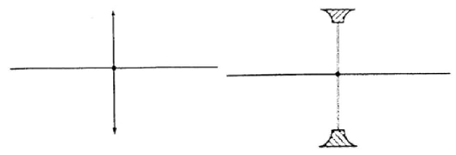

- The nature, size and position of the image formed by a particular lens depends on the position of the object in relation to the lens.
Construction of Ray Diagrams
Three rays are of particular importance in the construction of ray diagrams.
- A ray of light travelling parallel to the principal axis passes through the principal focus on refraction through the lens. In case of a concave lens the ray is diverged in a way that it appears to come from the principal focus.
- A ray of light travelling through the optical centre goes un-deviated along the same path.
- A ray of light travelling through the principal focus is refracted parallel to the principal axis on passing through the lens. The construction of the rays is illustrated below.

Images Formed by a Converging Lens
- Object between the lens and the principal focus.
- Image formed behind the object
- Virtual
- Erect
- Magnified - Object at infinity.

- Image formed at the principal focus of the lens
- Real
- Inverted
- Diminished - Object at the principal focus (at F).
- Image is at infinity. - Object between the principal focus (F) and 2F.
- Image situated beyond 2 F
- Real
- Inverted
- Magnified - Object at 2F.
- Image is formed at 2F
- Real
- Inverted
- Same size as the object - Object beyond F.
- Image moves nearer to F as object shifts further beyond 2F
- Real
- Inverted
- Diminished
Images Formed by a Diverging Lens
- Images formed by diverging lens are always erect, virtual and diminished for all positions of the object.